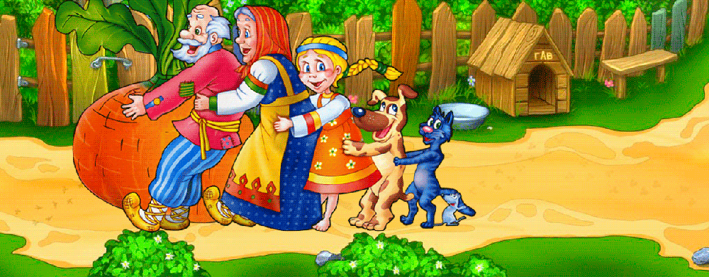
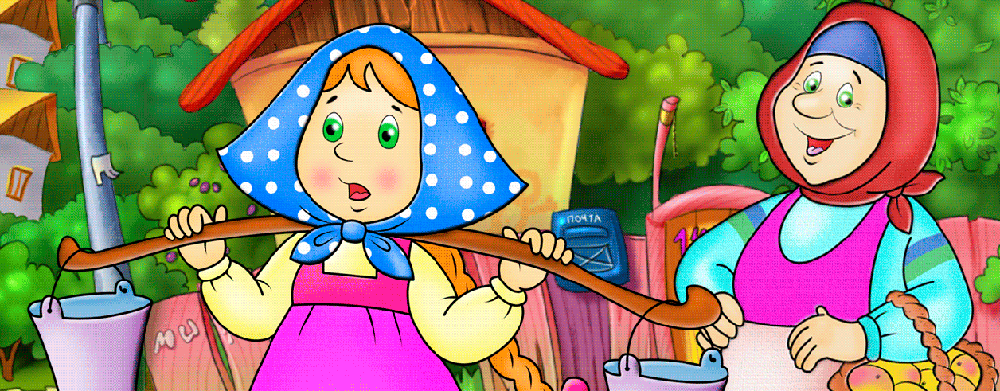
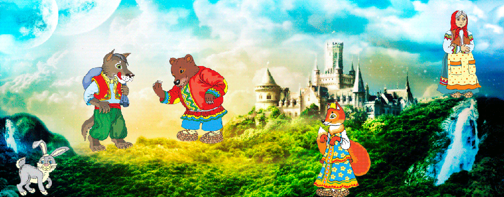
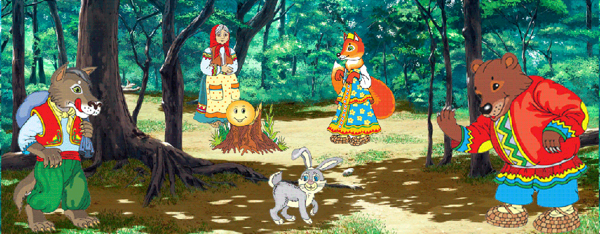
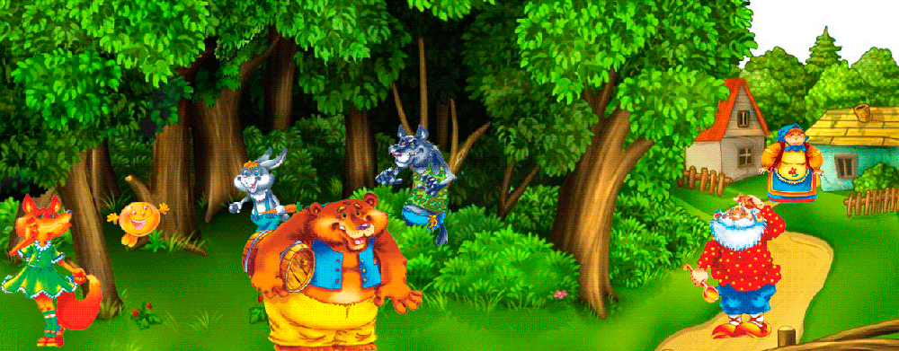

- 
Казка- це світ, чарівний та незвичний
- 
Казка- це диво, сповнене краси
- 
Повір у казку й зможеш подолати Усі перипетії й дике зло. В житті людині треба небагато, Щоб сонечко надії зацвіло
- 
І мама зовсім скоро прийде знов, Зітхне, присяде поруч, тихо прошепоче:«Казками про життя я намалюю сон, У нім домалюй і ти, все що захочеш».
КОЛИ КАЗКА ЗНАННЯ СІЄ, ТОДІ НАРОДЖУЮТЬСЯ МРІЇ
- 
Повір у казку і усе здійсниться, Все буде добре, як біда пройде. А принц із білого коня спішиться Й тебе за руку в казку поведе.

Повір у казку і вона стане реальністю!